Hi! We're Katy and Eugene and we understand that you've spent months planning this day. You’ve picked the perfect venue, carerfully considering every detail. But everyone tells you the same thing, the day goes by in a flash! You shouldn’t spend your wedding day performing for a camera or recreating moments for social media. You should be soaking up every hug, laugh, and happy tear with the people you love. That is where we come in. We turn your real, unfiltered wedding day into a beautiful, down-to-earth film. We handle the camera stress so you can just focus on being entirely present.
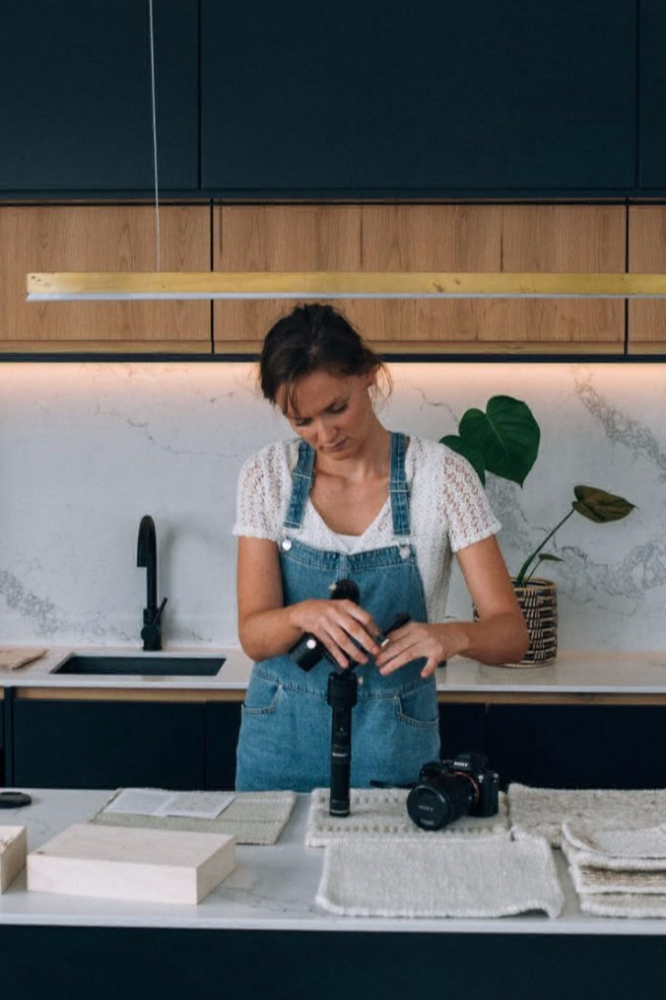
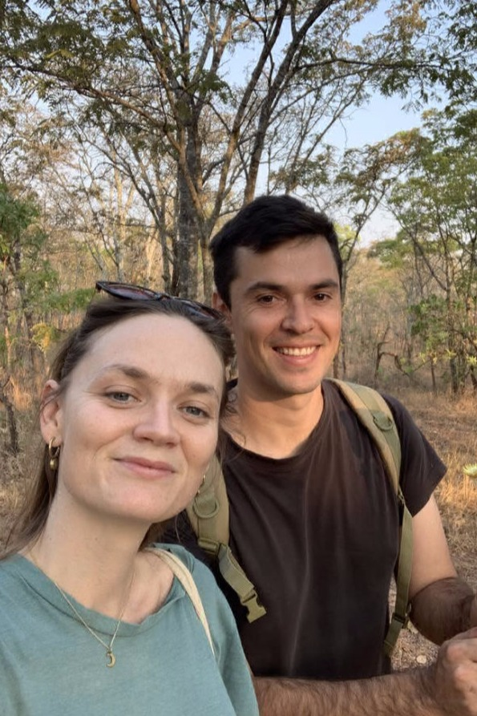
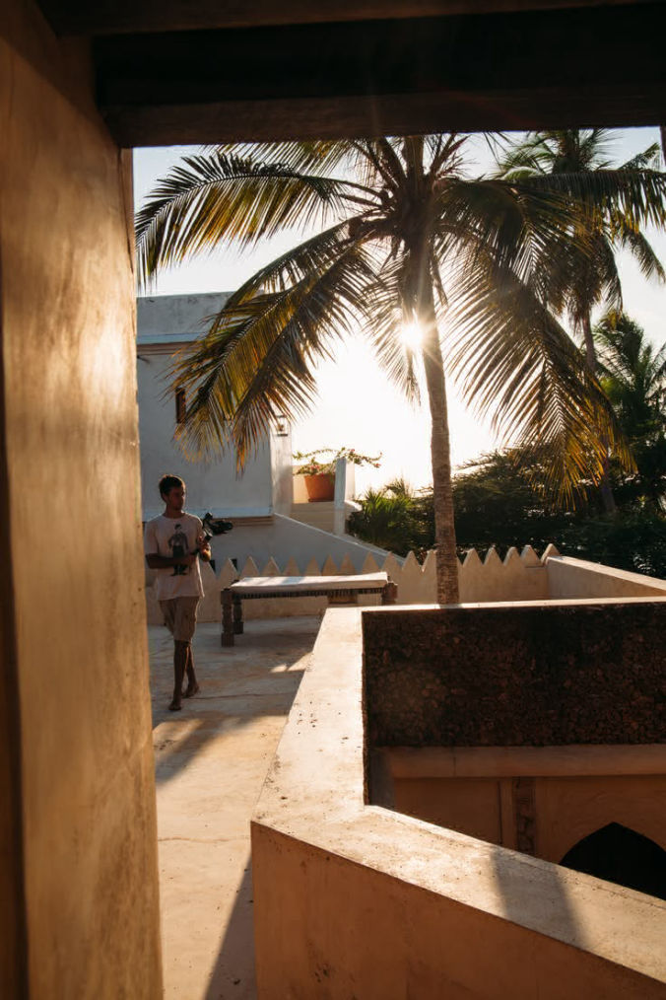
We’ve been creating videos for over 8 years
Our work has taken us from the UK and Kenya to South Africa. We’ve filmed for global names like CNBC and Michelle Obama. But honestly? None of that matters on your wedding day. We know you need someone who is great at capturing stories and will be lovely and chill even when your mum gets a bit stressed out!
Our style is documentary, but beautiful.
We don't bring intimidating production crews or massive camera gear that gets in everyone’s way. We quietly blend into the background of your day, capturing things exactly as they naturally happen.
We keep everything low-pressure so you can actually relax and enjoy your day.
If you are worried about looking awkward or hate having your photo taken, we promise you that almost every couple we work with tells us the exact same thing. We’ve directed everyone from nervous business founders to safari guides.
Photographs show what it looked like, film lets you feel it
Photos are beautiful, but they can’t capture the tremor in your partner's voice during their vows. They can't replay the laughter during the speeches, or the specific sound of your favorite people celebrating together. Years from now, those voices might become some of your most precious memories.
Our story began in a hippo filled national park in Zambia
We started making videos entirely for fun when we met in a hippo-filled national park in Zambia. Today, we live in Portugal, where Eugene spends his free time birdwatching and Katy is trying to grow a vegetable and herb filled garden.
The best film happens when you forget we are there
Whether you’re getting married overlooking the Algarve, inside a historic Portuguese villa, or beside a vineyard in the Douro Valley, your day deserves to be remembered beautifully and honestly.
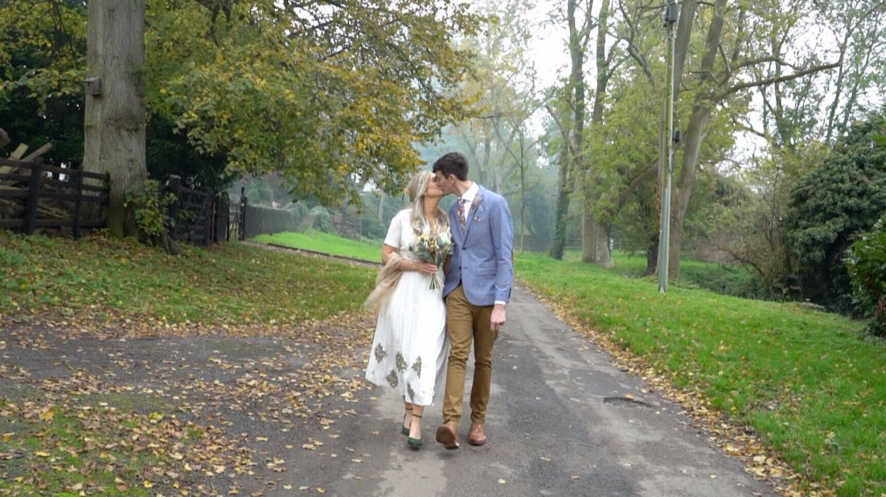
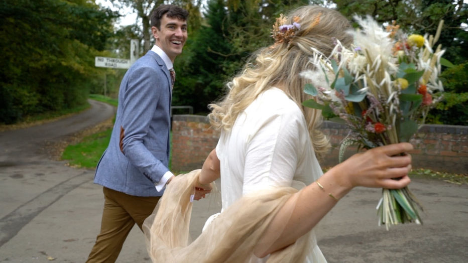
What Couples Say About Our Videos
“We cried watching it back. They noticed so many little moments we completely missed during the day.” - Isla and Henry
“It felt exactly like us. It didn't feel produced or fake at all, it was just our day.” - Bex and Tom
“Booking them was easily the best investment we made for our wedding.” - Hannelie and Rohan
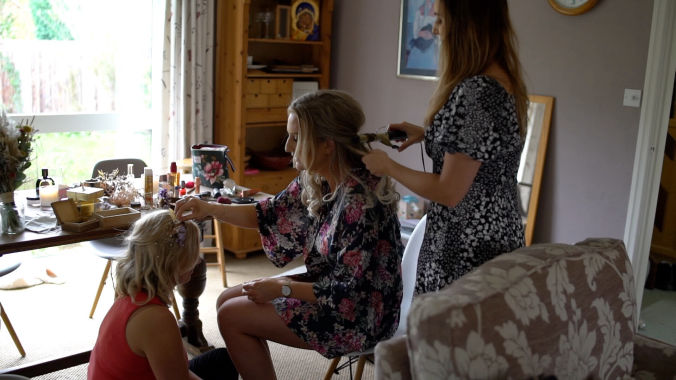
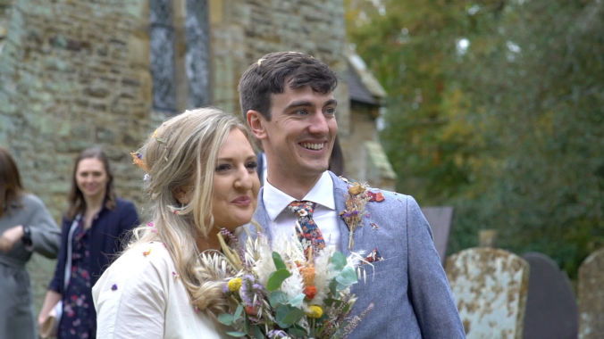
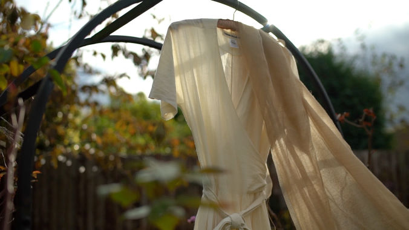
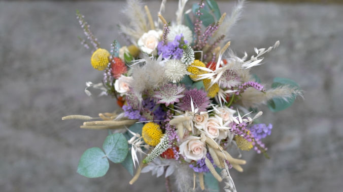
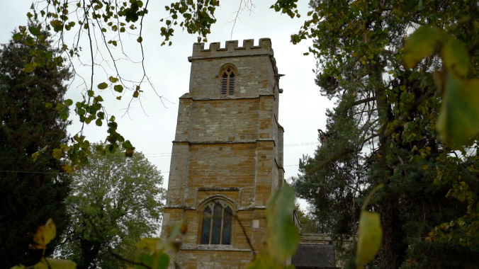
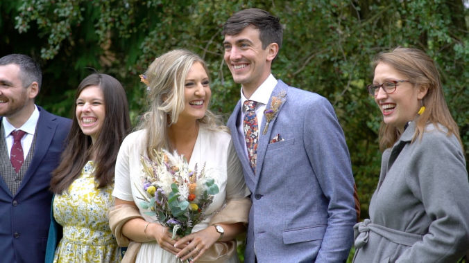
We’d love to help you stay present while capturing all the laughs, speeches, and amazing moments. Once the day is done, you can head off on your honeymoon knowing that a beautiful video of all those memories from the day is on it's way!
If our approach feels right for your wedding, let’s chat.
katy@munjiri.com
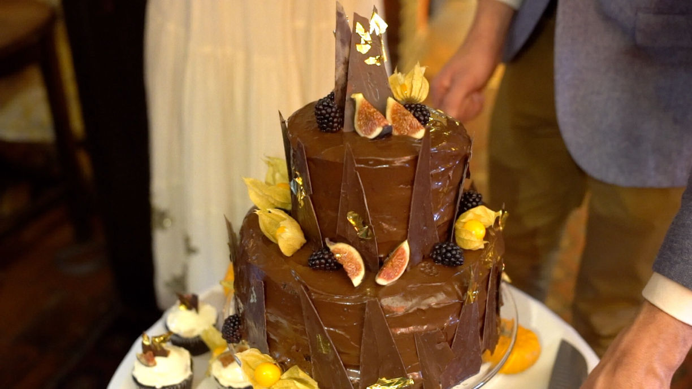
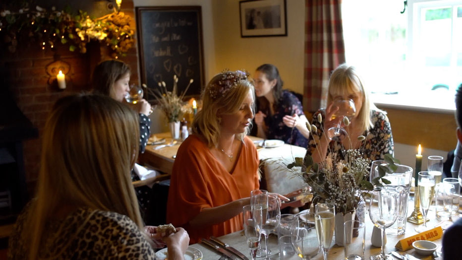